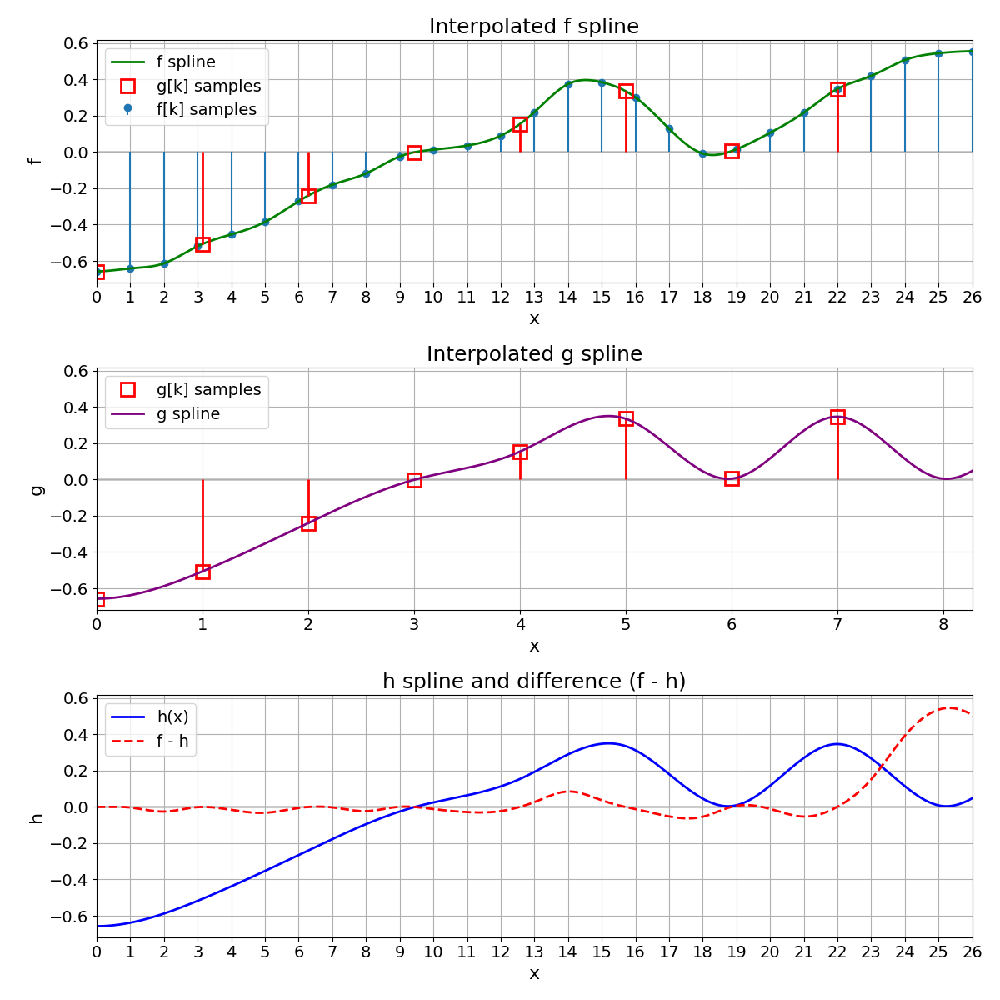
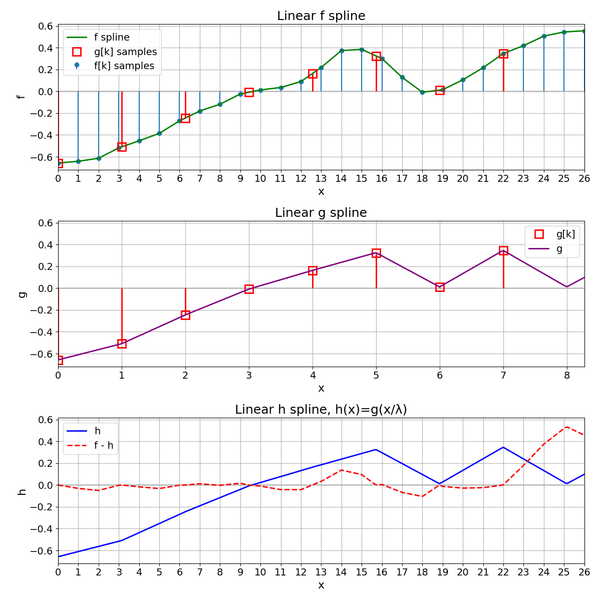

Compare Different Splines#
Obtain a spline through different methods and compare the results.
Assume that a user-provided 1D list of samples \(f[k]\) has been obtained by sampling a spline on a unit grid.
From the samples, recover the continuously defined spline \(f(x)\).
Resample \(f(x)\) to get \(g[k] = f(Tk)\), with \(|T| > 1\).
Create a new spline \(g(x)\) from the samples \(g[k]\).
We define \(h(x) = g(x / T)\).
Compute the mean squared error (MSE) between \(f\) and \(h\).
Imports#
import numpy as np
import matplotlib.pyplot as plt
from matplotlib.gridspec import GridSpec
from splineops.spline_interpolation.tensor_spline import TensorSpline
plt.rcParams.update(
{
"font.size": 14, # Base font size
"axes.titlesize": 18, # Title font size
"axes.labelsize": 16, # Label font size
"xtick.labelsize": 14,
"ytick.labelsize": 14,
}
)
number_of_samples = 27
f_support = np.arange(number_of_samples, dtype=np.float64)
f_support_length = len(f_support) # It's equal to number_of_samples
f_samples = np.array(
[
-0.657391,
-0.641319,
-0.613081,
-0.518523,
-0.453829,
-0.385138,
-0.270688,
-0.179849,
-0.11805,
-0.0243016,
0.0130667,
0.0355389,
0.0901577,
0.219599,
0.374669,
0.384896,
0.301386,
0.128646,
-0.00811776,
0.0153119,
0.106126,
0.21688,
0.347629,
0.419532,
0.50695,
0.544767,
0.555373,
],
dtype=np.float64,
)
plot_points_per_unit = 12
# Interpolated signal
base = "bspline3"
mode = "mirror"
f = TensorSpline(data=f_samples, coordinates=f_support, bases=base, modes=mode)
f_coords = np.array(
[q / plot_points_per_unit for q in range(plot_points_per_unit * f_support_length)]
)
# Syntax hint: pass (plot_coords,) not plot_coords
f_data = f(coordinates=(f_coords,), grid=False)
val_T = np.pi
g_support_length = round(f_support_length // val_T)
g_support = np.arange(g_support_length, dtype=np.float64)
f_resampled_coords = np.linspace(
0, (g_support_length - 1) * val_T, g_support_length, dtype=np.float64
)
g_samples = f(coordinates=(f_resampled_coords,), grid=False)
g = TensorSpline(data=g_samples, coordinates=g_support, bases=base, modes=mode)
g_coords = np.linspace(
0, g_support_length - 1, plot_points_per_unit * g_support_length, dtype=np.float64
)
g_data = g(coordinates=(g_coords,), grid=False)
Expand g to obtain h#
To compare \(g\) on the same domain as \(f\), we expand \(g\) by defining a new function \(h\) as
where \(g\) is the continuously defined spline built from the discrete points \(g[k]\). Hence, \(h\) and \(f\) have the same support and can be directly compared (e.g., by computing an MSE).
fig2 = plt.figure(figsize=(12, 12))
gs2 = GridSpec(
nrows=3,
ncols=2,
width_ratios=[g_support_length, f_support_length - g_support_length],
height_ratios=[1, 1, 1], # three equal rows
)
# TOP ROW: f + f spline + discrete g[k]
ax_top = fig2.add_subplot(gs2[0, :]) # spans both columns
ax_top.set_title("Interpolated f spline")
# Replot discrete f[k] as stems
ax_top.stem(f_support, f_samples, basefmt=" ", label="f[k] samples")
# Replot f spline
ax_top.plot(f_coords, f_data, color="green", linewidth=2, label="f spline")
# Overplot discrete g[k] in red squares at x = k*val_T
x_g = np.arange(g_support_length) * val_T
ax_top.vlines(x=x_g, ymin=0, ymax=g_samples, color="red", linewidth=2.0)
ax_top.plot(
x_g,
g_samples,
"rs",
mfc="none",
markersize=12,
markeredgewidth=2,
label="g[k] samples",
)
# Horizontal line at 0
ax_top.axhline(0, color="black", linewidth=1, zorder=0)
ax_top.set_xlim(0, f_support_length - 1)
ax_top.set_xticks(np.arange(0, f_support_length, 1))
ax_top.set_xlabel("x")
ax_top.set_ylabel("f")
ax_top.legend()
ax_top.grid(True)
# MIDDLE ROW: g spline expanded to full width (build g over physical x = T*k)
g_phys = TensorSpline(data=g_samples, coordinates=x_g, bases=base, modes=mode)
# Evaluate across the full width of f
g_mid_coords = f_coords
g_mid_data = g_phys(coordinates=(g_mid_coords,), grid=False)
ax_mid = fig2.add_subplot(gs2[1, :]) # span both columns now
ax_mid.set_title("Interpolated g spline")
# Discrete g[k] with red stems & markers at the true positions x = k·T
ax_mid.vlines(x=x_g, ymin=0, ymax=g_samples, color="red", linewidth=2.0)
ax_mid.plot(
x_g,
g_samples,
"rs",
mfc="none",
markersize=12,
markeredgewidth=2,
label="g[k] samples",
)
# Continuous g(x) across 0..26
ax_mid.plot(g_mid_coords, g_mid_data, color="purple", linewidth=2, label="g spline")
ax_mid.axhline(0, color="black", linewidth=1, zorder=0)
ax_mid.set_xlim(0, f_support_length - 1)
ax_mid.set_ylabel("g")
ax_mid.grid(True)
ax_mid.legend()
ax_mid.set_ylim(ax_top.get_ylim()) # match vertical scale with the top row
# Ticks at every multiple of T that fits (e.g., 0..8 for T=pi)
max_k_tick = int(np.floor((f_support_length - 1) / val_T))
tick_ks = np.arange(max_k_tick + 1)
ax_mid.set_xticks(tick_ks * val_T)
ax_mid.set_xticklabels([str(k) for k in tick_ks])
ax_mid.set_xlabel("x")
# BOTTOM ROW: expanded h(x) = g(x / λ)
ax_bottom = fig2.add_subplot(gs2[2, :]) # spans both columns
ax_bottom.set_title("h spline and difference (f - h)")
# We'll sample h over 0..(f_support_length-1)
h_coords = f_coords
# Evaluate h(x) = g(x/val_T)
h_data = g(coordinates=(h_coords / val_T,), grid=False)
# Also evaluate f at the same coords, so we can show the difference
f_data_for_diff = f(coordinates=(h_coords,), grid=False)
diff_data = f_data_for_diff - h_data
# Plot h in blue
ax_bottom.plot(h_coords, h_data, color="blue", linewidth=2, label="h(x)")
# Plot difference f - h in red, dashed
ax_bottom.plot(
h_coords, diff_data, color="red", linestyle="--", linewidth=2, label="f - h"
)
ax_bottom.axhline(0, color="black", linewidth=1, zorder=0)
# The domain is the same as f
ax_bottom.set_xlim(0, f_support_length - 1)
ax_bottom.set_xticks(np.arange(0, f_support_length, 1))
ax_bottom.set_xlabel("x")
ax_bottom.set_ylabel("h")
ax_bottom.grid(True)
ax_bottom.legend()
# Match y axis with top row
ax_bottom.set_ylim(ax_top.get_ylim())
fig2.tight_layout()
plt.show()

MSE Between f and h#
We compute the MSE between \(h(x)\) and \(f(x)\) as
Riemann Approximation
To estimate this integral, we discretize the interval \([a,b]\) into \(K\) points. At each point \(x_k\), we evaluate \((f(x_k) - h(x_k))^2\) and multiply by the width \(\Delta x\). Summing across all points produces the approximation
The normalization by \((b-a)\) yields the MSE.
# 1) Define a midpoint sampling domain for [a, b]
N = 1000
padding_fraction = 0.2 # We avoid artifacts near the edges by excluding part of the domain from each side
a = (f_support_length - 1) * padding_fraction
b = (f_support_length - 1) * (1 - padding_fraction)
dx = (b - a) / N
mid_x = np.linspace(a + dx / 2, b - dx / 2, N, dtype=np.float64) # midpoints
# 2) Evaluate f(x) and h(x) at those midpoints
f_mid = f(coordinates=(mid_x,), grid=False)
h_mid = g(coordinates=(mid_x / val_T,), grid=False)
# 3) Compute the midpoint Riemann sum for ∫(f(x)-h(x))^2 dx
squared_diff = (f_mid - h_mid) ** 2
integral_value = np.sum(squared_diff) * dx
# 4) Divide by (b - a) to get the MSE
mse_midpoint = integral_value / (b - a)
print(f"MSE between f and h = {mse_midpoint:.6e}")
MSE between f and h = 1.152514e-03
Variation with Linear Splines#
We repeat exactly everything with linear splines. As the MSE increases, we conclude that splines of degree 3 provide a better representation of the original signal than splines of degree 1.
base = "bspline1"
mode = "mirror"
# 1) Rebuild linear-spline version of f, then g
f_lin = TensorSpline(data=f_samples, coordinates=f_support, bases=base, modes=mode)
g_lin_samps = f_lin(coordinates=(f_resampled_coords,), grid=False)
g_lin = TensorSpline(data=g_lin_samps, coordinates=g_support, bases=base, modes=mode)
# 2) Evaluate them at the same plotting coordinates
f_lin_f = f_lin(coordinates=(f_coords,), grid=False) # f_lin over domain 0..(K-1)
g_lin_g = g_lin(
coordinates=(g_coords,), grid=False
) # g_lin over domain 0..(g_support_length-1)
h_lin_h = g_lin(
coordinates=(f_coords / val_T,), grid=False
) # h_lin(x)=g_lin(x/λ) over 0..(K-1)
# 3) Create the 3×2 figure layout
fig3 = plt.figure(figsize=(12, 12))
gs3 = GridSpec(
nrows=3,
ncols=2,
width_ratios=[g_support_length, f_support_length - g_support_length],
height_ratios=[1, 1, 1],
)
# TOP ROW: entire row (two columns combined) for f
ax_top = fig3.add_subplot(gs3[0, :])
ax_top.set_title("Linear f spline")
# Plot f[k] as stems
ax_top.stem(f_support, f_samples, basefmt=" ", label="f[k] samples")
# Plot f spline
ax_top.plot(f_coords, f_lin_f, color="green", linewidth=2, label="f spline")
# Overplot discrete g[k] as unfilled red squares at x = k * val_T
x_g = np.arange(g_support_length) * val_T
ax_top.vlines(x=x_g, ymin=0, ymax=g_lin_samps, color="red", linewidth=2.0)
ax_top.plot(
x_g,
g_lin_samps,
"rs", # red squares
mfc="none", # unfilled
markersize=12,
markeredgewidth=2,
label="g[k] samples",
)
ax_top.axhline(0, color="black", linewidth=1, zorder=0)
ax_top.set_xlim(0, f_support_length - 1)
ax_top.set_xticks(np.arange(0, f_support_length, 1))
ax_top.set_xlabel("x")
ax_top.set_ylabel("f")
ax_top.grid(True)
ax_top.legend()
# MIDDLE ROW: linear g spline expanded to full width (build over physical x = T*k)
g_lin_phys = TensorSpline(data=g_lin_samps, coordinates=x_g, bases=base, modes=mode)
g_lin_mid_coords = f_coords
g_lin_mid_data = g_lin_phys(coordinates=(g_lin_mid_coords,), grid=False)
ax_mid = fig3.add_subplot(gs3[1, :]) # span both columns now
ax_mid.set_title("Linear g spline")
# Discrete g[k] with red stems & markers at x = k·T
ax_mid.vlines(x=x_g, ymin=0, ymax=g_lin_samps, color="red", linewidth=2.0)
ax_mid.plot(
x_g, g_lin_samps, "rs", mfc="none", markersize=12, markeredgewidth=2, label="g[k]"
)
# Continuous linear g(x) across 0..26
ax_mid.plot(g_lin_mid_coords, g_lin_mid_data, color="purple", linewidth=2, label="g")
ax_mid.axhline(0, color="black", linewidth=1, zorder=0)
ax_mid.set_xlim(0, f_support_length - 1)
ax_mid.set_ylabel("g")
ax_mid.grid(True)
ax_mid.legend()
ax_mid.set_ylim(ax_top.get_ylim())
# Ticks at multiples of T (0..8 for T=pi in 0..26)
max_k_tick = int(np.floor((f_support_length - 1) / val_T))
tick_ks = np.arange(max_k_tick + 1)
ax_mid.set_xticks(tick_ks * val_T)
ax_mid.set_xticklabels([str(k) for k in tick_ks])
ax_mid.set_xlabel("x")
# BOTTOM ROW: entire row for h
ax_bottom = fig3.add_subplot(gs3[2, :])
ax_bottom.set_title("Linear h spline, h(x)=g(x/λ)")
ax_bottom.plot(f_coords, h_lin_h, color="blue", linewidth=2, label="h")
# Evaluate f_lin at the same coords, then difference
f_lin_for_diff = f_lin(coordinates=(f_coords,), grid=False)
diff_lin = f_lin_for_diff - h_lin_h
# Plot difference in red, dashed
ax_bottom.plot(
f_coords, diff_lin, color="red", linestyle="--", linewidth=2, label="f - h"
)
ax_bottom.axhline(0, color="black", linewidth=1, zorder=0)
ax_bottom.set_xlim(0, f_support_length - 1)
ax_bottom.set_xticks(np.arange(0, f_support_length, 1))
ax_bottom.set_xlabel("x")
ax_bottom.set_ylabel("h")
ax_bottom.grid(True)
ax_bottom.legend()
ax_bottom.set_ylim(ax_top.get_ylim())
fig3.tight_layout()
plt.show()
# 4) Recompute MSE with linear splines using midpoint rule
N = 1000
padding_fraction = 0.2 # We avoid artifacts near the edges by excluding part of the domain from each side
a = (f_support_length - 1) * padding_fraction
b = (f_support_length - 1) * (1 - padding_fraction)
dx = (b - a) / N
# mid_x are the midpoints of each subinterval
mid_x = np.linspace(a + dx / 2, b - dx / 2, N, dtype=np.float64)
# Evaluate f_lin and h_lin at midpoints
f_lin_mid = f_lin(coordinates=(mid_x,), grid=False)
h_lin_mid = g_lin(coordinates=(mid_x / val_T,), grid=False)
# Midpoint Riemann sum for ∫(f_lin - h_lin)²
squared_diff_lin = (f_lin_mid - h_lin_mid) ** 2
integral_value_lin = np.sum(squared_diff_lin) * dx
# Divide by (b - a) to get MSE
mse_lin_midpoint = integral_value_lin / (b - a)
print(f"MSE with linear splines = {mse_lin_midpoint:.6e}")

MSE with linear splines = 2.604823e-03
Total running time of the script: (0 minutes 0.841 seconds)